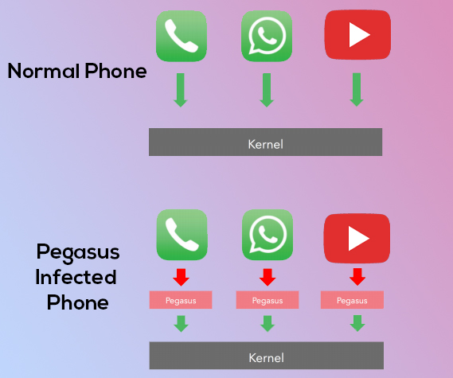

Pegasus is a spyware developed by the Israeli cyber arms firm NSO Group that can be installed on mobile phones running iOS, Android & Blackberry. Pegasus is capable of reading text messages, tracking calls, collecting passwords, location tracking, accessing the target device's microphone and camera, and harvesting information from apps. This is a Trojan horse that can be sent "flying through the air" to infect phones.
Pegasus uses Zero Click Attack. The older version of the spyware(2016-2018) used the SPEAR PHISHING technique to get into a device. Spear Phishing is a phishing technique where you click on one link and it installs the software on your device. But now, it can reach other phones using ZERO-CLICK-ATTACK which is as scary as it sounds. In Zero-Click-Attack, the spyware exploits a vulnerability of one of the apps presented on the phone without any interaction on your side, and then it spreads itself to the other device without the users' knowledge.
In 2016 a security analysis shows that the malware exploits three zero-day vulnerabilities, Trident, in Apple's iOS:
These vulnerabilities were present in the versions of iOS up to iOS 9.3.4. Given the severity of Trident, Apple worked extremely quickly to patch these vulnerabilities and has released iOS 9.3.5 to address them.
In 2019 WhatsApp revealed that NSO's software had been used to send malware to more than 1,400 phones by exploiting a zero-day vulnerability. Simply by placing a WhatsApp call to a target device, malicious Pegasus code could be installed on the phone, even if the target never answered the call.
Now the Security Issue has been fixed by Facebook the parent company of Whatsapp.
https://www.facebook.com/security/advisories/cve-2019-3568Once the spyware gets to the phone it can gain root access easily and pretty much do anything. Like it can look into your photos, videos, call logs, all the information stored in the device. And the scariest part is, it can start your camera and microphone anytime. It can also read your keystrokes. So if you are typing your password, then the spyware can read it too. It hooks into widely used secure messenger applications to copy cleartext data out of them before the user's app can encrypt and send it. From the perspective of the user and the people they're communicating with, their communications are secure, while the administrator of the Pegasus instance has secretly intercepted the clear text of their communication.
If you are just a normal person, then I think you are safe from it because right now only some high profile people are being targeted. It does not mean that we can take this lightly. The spyware violates several Indian IT Rules and the government is taking strict action against it.
I have seen people googling "pegasus apk download". It does not work like that. You will have to buy one license for it. Pegasus carries a high price tag averaging at over $25,000 per target. And the process is highly complicated for a normal person to buy. So, if you see pegasus.apk on the internet there is a 100% chance that it is fake.
As of now several thousands of people are infected worldwide by this spyware. How many and which “Zero Day Exploits” does pegasus use to infect is still unknown to us. Right now all we can say is that if you are not in connection with any high-profile people who have recently been infected then you are probably safe.